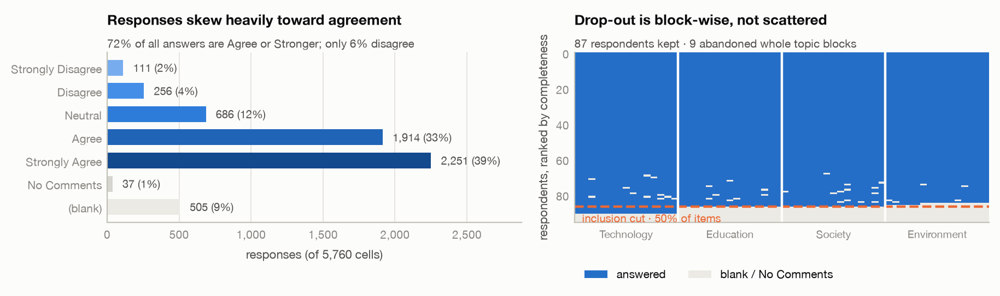
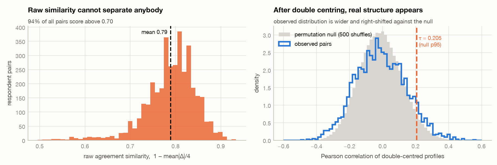
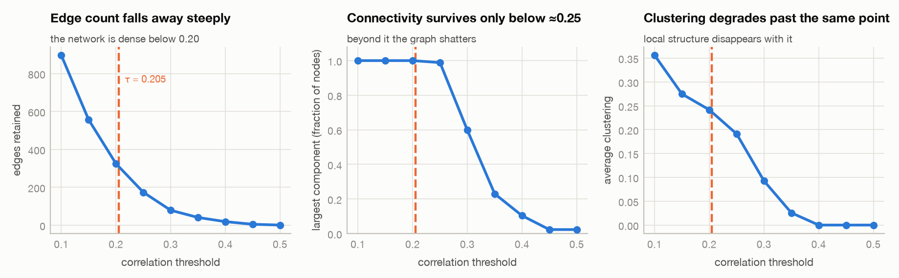
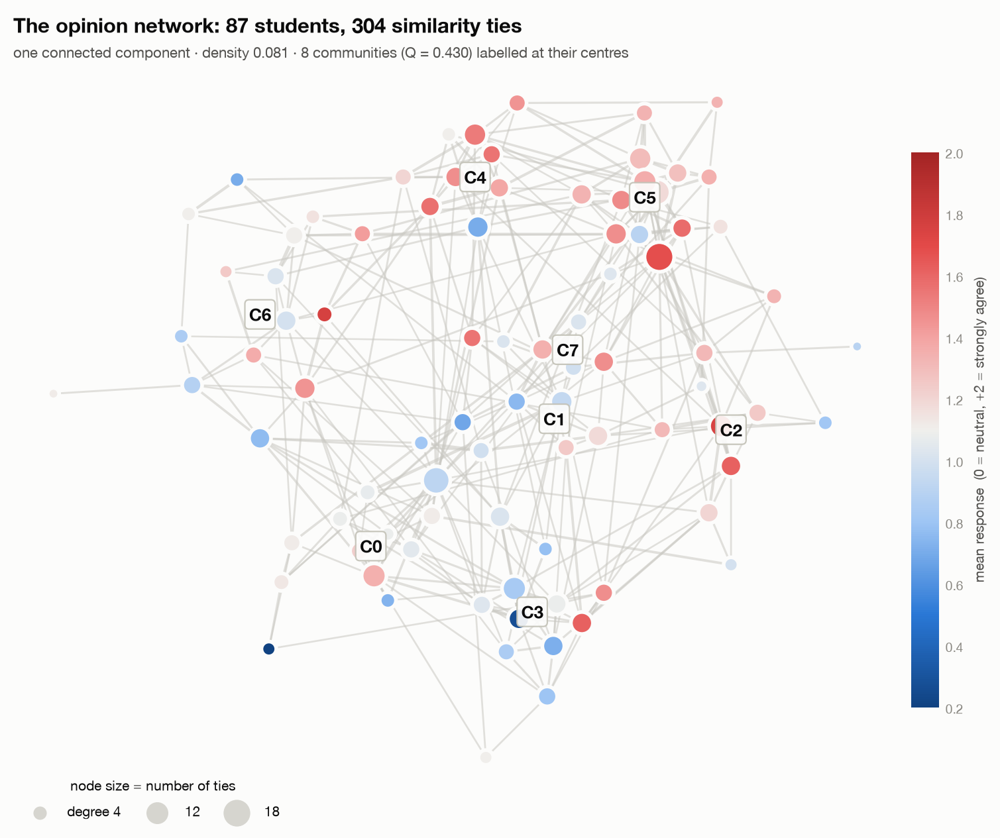
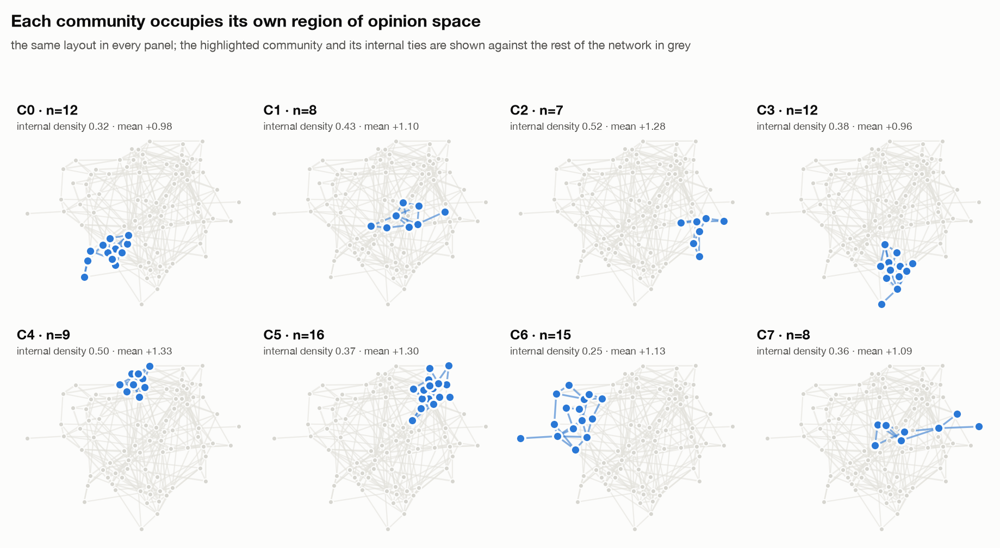
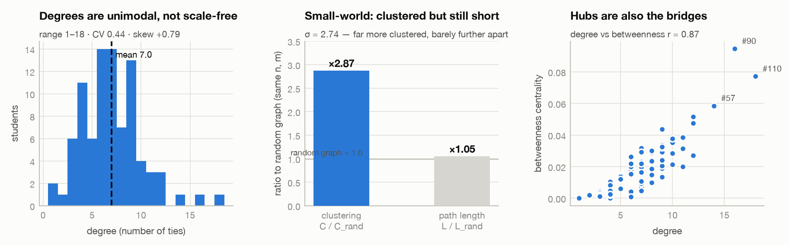
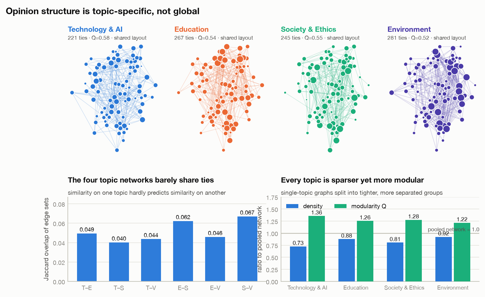
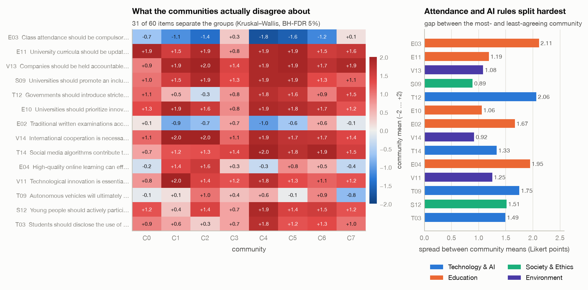
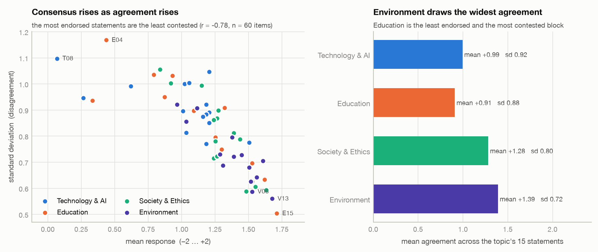

We build a similarity network over students from a 60-item Likert survey. The central difficulty is that the survey is overwhelmingly agreeable, so the obvious similarity measure makes everybody look alike. Correcting for item popularity and individual response style, and calibrating the edge threshold against a permutation null, produces a connected small-world network with eight detected opinion communities — communities that agree on values and divide on policy.
nerds/ammy
https://github.com/AishitaM/opinion-network-assignment
The repository contains the raw export, the four-stage pipeline (src/), every
generated table and .graphml network (outputs/), and this report. The whole
study reproduces with python src/run_all.py in about ten seconds; all randomness is
seeded from config.RANDOM_SEED = 42.
The export holds 96 responses to 60 statements, evenly divided into four blocks of
15: Technology & AI (T01–T15), Education (E01–E15), Society & Ethics
(S01–S15) and Environment (V01–V15). Every statement is answered on a
five-point agreement scale, with No Comments available as an opt-out. That is 5,760 cells.
We code the scale symmetrically — Strongly Disagree = −2 through Strongly Agree = +2 — so that zero means neutral and the sign carries meaning directly, which makes the coded matrix easier to read and report. The choice is presentational rather than consequential: a 1–5 coding differs from ours by an additive constant, and both centring steps in §4.3 remove that constant, so either coding yields identical centred profiles and an identical network. Treating the scale as interval-spaced is the standard simplification for Likert data and is the one assumption we make that the data cannot verify.
542 cells (9.4%) carry no opinion: 505 blank and 37 No Comments. Both are treated as missing — No Comments is a refusal, not a midpoint, and coding it as neutral would invent agreement that was never expressed. The missingness is not scattered: it falls in whole topic blocks (Fig. 1, right), which is the signature of people abandoning the form rather than skipping awkward questions.
Five respondents answered nothing at all, four answered only the Technology block (45/60 missing), and one stopped after three blocks. We therefore admit a respondent as a node only if they answered at least 50% of items. This removes 9 respondents and leaves 87 nodes. The cut is unambiguous because of the block structure — no retained respondent sits near the boundary. The 1.19% of cells still missing among those kept (62 cells) take that item's median, the neutral choice for an ordinal scale.
The class agrees with almost everything. The grand mean response is +1.14, 72% of answers are Agree or stronger, and only 6% are any kind of disagreement (Fig. 1, left). Respondents also differ in how agreeably they answer: individual mean responses run from −0.12 to +1.77 (sd 0.32). These two facts — item popularity and acquiescence bias — are nuisance signals that swamp genuine opinion differences, and Section 4 is largely about removing them.

Nodes are students. An edge means "these two students hold unusually similar opinion patterns". Edges are undirected and weighted by the strength of that similarity. The survey records no interaction between students, so this is a similarity network inferred from responses, not an observed social network — a distinction we return to in Section 6.
The natural first choice is agreement similarity, 1 − mean|Δ| / 4. It does not work.
Its mean across all 3,741 pairs is 0.79 and 94% of pairs exceed 0.70 (Fig. 2, left).
Because nearly everyone agrees with nearly everything, near-identical scores are produced by students
with quite different views. Any threshold on this measure yields either a near-complete graph or an
arbitrary slice of one. We report this explicitly because it motivates everything that follows.
Two nuisance effects must go. Item popularity: agreeing that "climate change requires immediate action" says little, since 94% agree. We remove it by z-scoring each item across respondents, so each answer becomes a position relative to the class on that statement. Acquiescence: some students tick Strongly Agree throughout. We remove it by subtracting each respondent's mean z-score, so what remains is the shape of their opinion profile rather than its level. Neither operation discards a respondent or an item, but both are deliberately lossy: centring removes the item and person means, and those means are not recoverable from the centred matrix. That is the intent — the removed quantities are exactly the nuisance signals — and it means the network describes relative opinion patterns only, never absolute agreement levels.
Edge weight is the Pearson correlation between two double-centred profiles. It ranges from −0.49 to +0.56 with mean −0.01 and sd 0.15 (Fig. 2, right) — a genuine spread, unlike the naive measure. A positive weight now means "these two deviate from the class consensus in the same direction", which is what an opinion tie should mean.
A hand-picked cut-off would be the weakest link in the study, so we calibrate one. We shuffle each item independently 500 times, which preserves every item's marginal distribution while destroying any association between respondents, and recompute the correlations. This is the distribution the pipeline produces from structureless data. We keep an edge only if its correlation exceeds the 95th percentile of that null: τ = 0.205.
Fig. 3 shows this lands in a workable regime. Edge count falls smoothly and the network fragments past ≈0.24 — connectivity persists up to τ ≈ 0.238, and by 0.30 the graph has 18 isolates and 26 components. The selected threshold retains a connected network with no isolates, comfortably inside that range rather than at its edge. The choice is therefore supported on two independent grounds: statistical (it is calibrated against the null) and structural (it sits before fragmentation, so every student remains in the analysis).
An honest caveat. τ is a structural filter, not a per-pair significance claim. Controlling the false discovery rate across all 3,741 pairs at 5% (Benjamini–Hochberg) leaves only one edge — with 87 respondents and 60 items, no individual pair is separately significant. We report the network as a descriptive structure whose aggregate properties we then test against null models, and Section 5 tests exactly that.


The same procedure, each with its own independently calibrated null, is applied to the four 15-item topic blocks, and once more transposed to give an item–item network (which statements move together). These let us ask whether opinion structure is global or topic-specific.
| Metric | Observed | Random baseline | Reading |
|---|---|---|---|
| Nodes / edges | 87 / 304 | 87 / 304 | matched by construction |
| Density | 0.081 | 0.081 | sparse |
| Mean degree | 7.0 | 7.0 | range 1–18 |
| Average clustering | 0.229 | 0.080 | 2.87× random |
| Average path length | 2.61 | 2.49 | 1.05× random |
| Diameter | 5 | — | compact |
| Small-world σ | 2.74 | 1.00 | small-world |
| Degree assortativity | +0.037 | ≈0 | essentially neutral |
| Modularity Q | 0.430 | 0.334 | z = 9.5, p < 0.005 |
The clustering and path-length baselines above are Erdős–Rényi graphs matched on n and m only — unweighted, with degrees not preserved — so they bound those two comparisons loosely; the modularity baseline is the stricter degree- and weight-preserving null described in §5.2. With that caveat, the network is a small world: far more clustered than chance while remaining almost as navigable (Fig. 6). Opinion similarity is strongly transitive — if A resembles B and B resembles C, A tends to resemble C — yet any two students are separated by only 2.6 steps. The degree distribution is unimodal and mildly right-skewed (CV 0.44, skew +0.79), not scale-free: there is no small set of opinion "celebrities", only a gentle gradient from typical to distinctive.
Degree assortativity is +0.037 — effectively zero. Well-connected students are no more likely to tie to each other than to peripheral ones, so the network has no dense central core dominating the structure. Degree and betweenness correlate at r = 0.87, meaning the same students who are typical are also the bridges between groups; there is no separate class of brokers.

Louvain finds 8 communities of 7–16 students (Q = 0.430). Two checks establish that this is real rather than an artefact of the algorithm, which will partition any graph:
The structure appears fine-grained at the settings we used. Lowering the Louvain resolution parameter over the range we tried (0.4–1.2) did not merge the eight into two or three larger camps but fragmented them further (13 groups at resolution 0.4–0.8, with lower Q). We did not search the parameter space exhaustively or test alternative community-detection algorithms, so this is evidence about our settings rather than proof that no coarser partition exists.


Building a separate network per topic block gives the study's most striking result. The four topic networks barely share any edges: pairwise Jaccard overlap ranges from 0.040 (Technology–Society) to 0.067 (Society–Environment). Knowing that two students think alike about AI tells you almost nothing about whether they think alike about the environment. Each topic network is also sparser and more modular than the pooled one (Q = 0.52–0.58 against 0.43), so single-topic opinion splits into tighter, better-separated groups than the pooled view suggests.

A community is only meaningful if it corresponds to a difference in stated opinion. Testing every item across the eight groups (Kruskal–Wallis, Benjamini–Hochberg at 5%), 31 of 60 items significantly separate them. The largest gaps between the most- and least-agreeing community are E03, compulsory attendance (2.11 Likert points — from −1.8 to +0.3, genuine disagreement rather than differing enthusiasm) and T12, stricter AI regulation (2.06).

At the selected settings, we found eight communities rather than a clear two-group partition. Each is densely tied inside (internal density 0.25–0.52, against 0.081 globally) and loosely tied to the others, and none is isolated from the rest. Every one of the eight has a positive mean response (+0.96 to +1.33), and degree assortativity is ≈0.
That combination is worth stating precisely. A two-camp structure would show two large communities with opposite-signed mean opinions; what we observe instead is high modularity among communities that are uniformly agreeable on average, separated by which statements they endorse rather than by overall agreement level (§5.4). We describe this as fragmentation into like-minded groups, and make no broader claim about polarisation in the class — the survey measures stated opinion at a single point in time, not the dynamics that claim would require.
Item-level statistics explain why. Agreement and consensus move together (r = −0.78 between an item's mean and its standard deviation, Fig. 9): the more the class endorses a statement, the more it agrees about it. The consensus items are ethical near-universals — lifelong learning (E15, +1.71, sd 0.50), corporate environmental accountability (V13, +1.68), water conservation (V06, +1.53). The contested items are all institutional rules that bind the students themselves: online learning (E04, sd 1.17), compulsory attendance (E03, mean −0.94 — the only item the class rejects outright), and exams as a measure of knowledge (E02).
The pattern holds at the block level. Environment draws the widest agreement (mean +1.39, sd 0.72) and Education the least (mean +0.91, sd 0.88). Students converge on abstract external principles and diverge on concrete internal policy — a plausible reading being that the former cost them nothing while the latter govern their daily lives.

The topic networks overlapping at Jaccard ≤ 0.067 (Section 5.3) says something about how these students hold opinions: their views are issue-specific rather than ideological. A single latent "progressive–conservative" axis would produce substantially overlapping topic networks, because the same axis would order students the same way in every domain. It does not. Students who cluster together on AI regulation scatter on environmental policy. This is a network-level finding that item-by-item statistics cannot produce, and it is the main argument for having built the network at all.
High clustering with short paths indicates opinion similarity is locally transitive but globally connected. No student is opinion-isolated (minimum degree 1, no isolates), and the most distant pair is 5 steps apart. In a deliberative reading, an argument could travel across the whole class through few intermediaries while still encountering dense pockets of agreement — the structure supports both consensus-building and local reinforcement.
Treating survey responses as a network was worth doing because it answered a question the raw responses could not. Item statistics show what the class thinks; the network shows that the class is organised into eight detected opinion groups that survive our null-model and stability checks, that those groups agree on values and divide on institutional rules, and that group membership is not transferable across topics. The single methodological lesson is that the correction step was decisive: on raw agreement similarity, 94% of pairs looked alike and none of this structure was visible.
Every member's work is traceable to specific files and commits in the repository.
| Member | Owned | Specific tasks completed |
|---|---|---|
| Aishita Marri 2023113027 |
Visualisation & repositorysrc/visualize.py,
src/vizstyle.py, report/ |
Created and maintained the GitHub repository; built the shared plotting style and the colour-blind-validated palette; produced Figures 4–9, including the community-aware layout and the faceted community view; assembled and typeset this report; wrote §6 and the repository README. |
| Abdul Rahman Mujtaba 2023102024 |
Analysis & validationsrc/analyze.py |
Computed global metrics and the small-world comparison against random baselines; computed all centralities; ran Louvain with the degree- and weight-preserving null and the 100-restart stability check; built the Kruskal–Wallis discriminating-item test; computed topic-network agreement; wrote §5. |
| Anmol Sharma 2024101148 |
Data preparation & network constructionsrc/prepare_data.py,
src/build_network.py, src/config.py |
Parsed the raw export and item metadata; designed the coding scheme; diagnosed the missingness as block-wise abandonment and set the 50% completeness rule; identified the degeneracy of naive agreement similarity; implemented double centring, the permutation null model and the BH-FDR check (validated against SciPy); ran the threshold sweep; built the topic and item networks; produced Figures 1–3; wrote §3 and §4. |
Joint work. The choice of nodes and edge semantics, the decision to calibrate rather than hand-pick the edge threshold, and the interpretation in §6 were agreed by all three members. Each member reviewed another's code; that review produced the corrections to the modularity null model (§5.2), the connectivity threshold (§4.5) and the claims in §3.2 and §6.1.
python src/run_all.py (≈10 s, seed 42). All figures and every number
quoted above are regenerated from data/raw/Survey_Results_UC.csv by that command.